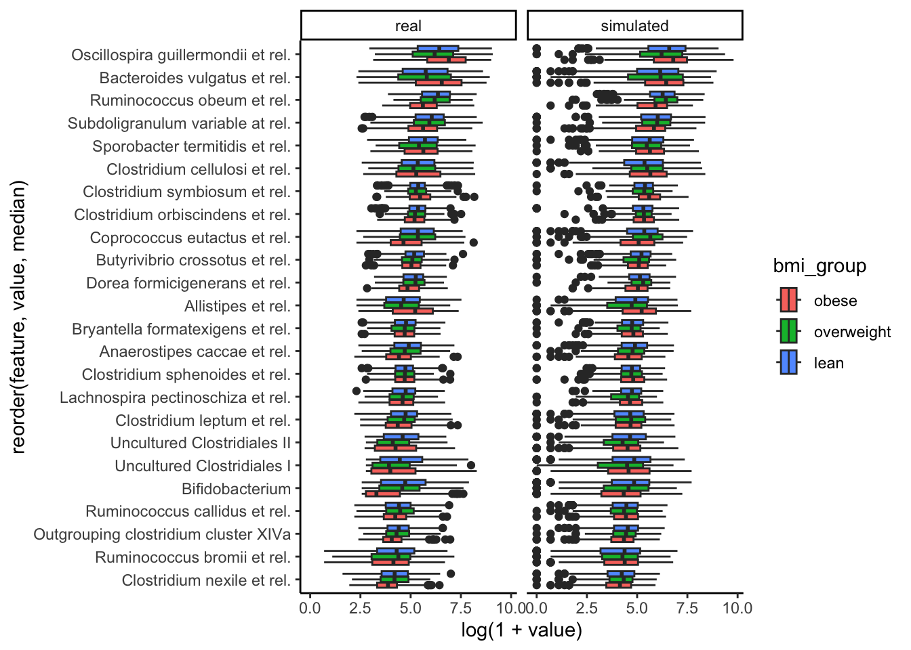

Chapter 2 Simulating Differential Abundance
Before we consider simulating entire microbial communities, with their complex correlation structures, let’s learn simulators for individual taxa. This is already enough to analyze taxon-level differential abundance approaches. For example, at the end of this session, we’ll apply a simulator to study the power and false discovery rate of limma-voom when applied to microbiome data (as opposed to the bulk RNA-seq data for which it was originally proposed). Also, marginal modeling is a first step towards multivariate (community-wide) modeling, which we’ll explore in the next session.
Let’s load the necessary packages. Instructions for scDesigner and MIGsim
can be found in the pre-workshop announcement. SummarizedExperiment is on
Bioconductor, and all other packages are on CRAN.
Let’s train a simulator to fit the Atlas dataset. We’ll use bmi_group as the
covariate of interest – we want to see how microbiome composition varies among
people with different BMI. We found it helpful
to fixed zero inflation across the population (nu), so we have set nu = ~1.
Finally, since we want to eventually evaluate testing methods that are designed
for count data, we have used the (Z)ero (I)nflated (N)egative (B)inomial
location-shape-scale model.
data(atlas1006, package = "microbiome")
atlas <- makeTreeSEFromPhyloseq(atlas1006) |>
filter(time == 0) |>
dplyr::mutate(
bmi_group = case_when(
bmi_group == "severeobese" ~ "obese",
bmi_group == "morbidobese" ~ "obese",
bmi_group == "obese" ~ "obese",
bmi_group == "lean" ~ "lean",
bmi_group == "overweight" ~ "overweight",
)
) |>
dplyr::filter(bmi_group %in% c("obese", "lean", "overweight")) |>
dplyr::mutate(
bmi_group = factor(bmi_group, levels = c("obese", "overweight", "lean"))
)
fmla <- list(
mu = ~bmi_group,
sigma = ~bmi_group,
nu = ~1
)We’ll remove the genera which are never observed in this dataset.
colData(atlas)$log_depth <- log(colSums(assay(atlas)))
zero_var <- apply(assay(atlas), 1, var) == 0
atlas <- atlas[!zero_var, ]Next we will select features that could work with ZINBF() estimation.
select_i <- c(1:2)
colData(atlas) <- colData(atlas)[, c("bmi_group", "sample")]
for (i in 3:dim(atlas)[1]) {
# print(select_i)
# print(glue::glue("{i}/{dim(atlas)[1]}"))
exper_tmp <- atlas[c(select_i, i), ]
sim <- setup_simulator(
exper_tmp,
fmla,
~ ZINBF()
)
error_warning <- estimate(sim, control = gamlss.control(
n.cyc = 20,
mu.step = 0.1
)) |>
tryCatch(warning = function(w) w, error = function(e) e)
if (is.na(class(error_warning)[2])) {
select_i <- c(select_i, i)
}
}colData(atlas) <- colData(atlas)[, c("bmi_group", "sample")]
atlas_filteres <- atlas[select_i, ]
sim <- setup_simulator(
atlas_filteres,
fmla,
~ ZINBF()
)
sim <- estimate(sim, control = gamlss.control(
n.cyc = 20,
mu.step = 0.1
))2.1 Critique
Exercise: The block below combines the real and simulated experiments and visualizes their difference both graphically and quantitatively. With your neighbors, discuss how well the simulator approximates the original template.
real <- atlas_filteres
simulated <- sample(sim)
combined <- bind_rows(
real = pivot_experiment(real), # real data
simulated = pivot_experiment(simulated), # simulated
.id = "source"
)
top_features <- assay(atlas_filteres) |>
rowMeans() |>
sort() |>
tail(10) |>
names()
top_combined <- combined |>
filter(feature %in% top_features)
ggplot(top_combined) +
geom_boxplot(
aes(sqrt(value), reorder(feature, value, median), fill = bmi_group)
) +
facet_grid(. ~ source) +
xlab("Square root transformed counts") +
ylab("") +
labs(fill = "BMI group") +
theme(legend.position = "right") +
scale_fill_manual(values = rev(c("#9491D9", "#3F8C61", "#F24405")))
kdetest.group <- function(data) {
x <- data |> filter(source == "real")
y <- data |> filter(source == "simulated")
res <- kde.test(x1 = x$value, x2 = y$value)$pvalue
res
}
prop.accepted.H0 <- sapply(
c("lean", "overweight", "obese"),
function(group) {
group_filter <- map(
unique(combined$feature),
~ combined |>
filter(feature == . &
bmi_group == group)
)
adjpvalue <- sapply(
1:length(select_i),
function(i) {
tryCatch(
{
kdetest.group(
group_filter[[i]]
)
},
error = function(e) {
NA
}
)
}
) |>
p.adjust(method = "BH")
sum(adjpvalue > 0.05, na.rm = TRUE) /
sum(!is.na(adjpvalue))
}
)
prop.accepted.H0## lean overweight obese
## 0.7241379 0.7471264 0.7441860Solution: The simulated data are generally similar to the original data. However, for some genera with positively skewed distributions and a high number of outliers, such as Prevotella melaninogenica et rel, the simulation reached its limits, explaining why the kernel density-based two-sample test returned significant differences between the real and simulated data for some genera. Nonetheless, the ordering of abundances between the groups typically agrees between the real and simulated data. The interquartile ranges for each taxon also seem to roughly match.
2.2 Power Analysis Loop
To run a power analysis, we need to define datasets that have known ground
truth. Then, we can run any differential abundance methods we want and see how
many of the true associations are recovered (and how many nulls are falsely
rejected). To this end, we’ll remove associations from genera based on Wilcoxon
Rank Sum test. We’ll choose to remove the genera that have a q valuse<0.1
in the original data.This is helpful because, even if we use bmi_group in our
formula, if in reality there is no (or very weak) effect, then even if our
simulator considers it as a true signal, the difference may be hard to detect.
Eventually, our package will include functions for modifying these effects
directly; at this point, though, we can only indirectly modify parameters by
re-estimating them with new formulas.
wilcox_res <- differential_analysis(atlas_filteres, "wilcox-clr")
nulls <- wilcox_res[wilcox_res$q_value.bmi_group. > 0.1, ] |>
rownames()
sim <- sim |> scDesigner::mutate(any_of(nulls), link = ~1)
sim <- estimate(sim, control = gamlss.control(
n.cyc = 20,
mu.step = 0.1
))Now that we have ground truth associations, we’ll evaluate LIMMA-voom, ANCOMBC, DESeq2 for differential analysis. We consider sample sizes ranging from 50 to 1200, and we simulate 20 datasets for each sample size.
config <- expand.grid(
sample_size = floor(seq(50, 1200, length.out = 5)),
n_rep = 1:20
) |>
mutate(run = as.character(row_number()))
sample_n_ <- function(sim_object, sample_size) {
n_original <- ncol(sim_object@template)
rep_ix <- rep(seq_len(n_original), each = ceiling(sample_size / n_original))
new_data <- colData(sim_object@template)[rep_ix[1:sample_size], ] |>
as_tibble() |>
mutate(
newdata_index = row_number()
)
sim_return <- sample(sim_object, new_data = new_data)
return(sim_return)
}
results <- list()
for (i in seq_len(nrow(config))) {
atlas_ <- sample_n_(sim, config$sample_size[i])
colnames(atlas_) <- paste0("Sample-", 1:config$sample_size[i])
results[[i]] <- sapply(c("LIMMA_voom", "ANCOMBC", "DESeq2"),
function(m) {
differential_analysis(atlas_, m) |>
da_metrics(nulls)
},
simplify = FALSE
)
# print(glue::glue("{i}/{nrow(config)}"))
}Exercise: Visualize the results. How would you interpret the results of the power analysis? Based on your earlier critique of the simulator, do you think the estimated power here is conservative, liberal, or about right?
Solution: We’ll use the stat_pointinterval function from the ggdist package to
visualize the range of empirical power estimates across sample sizes. We can see
that the average false discovery proportion is always controlled below 0.1,
though the variance in this proportion can be high. We can also see that
we would have quite good power with \(n \geq 625\) samples, but the worst case
scenarios can be quite poor for anything with fewer samples.
power_fdr <- sapply(1:100, function(i) {
bind_rows(results[[i]], .id = "method")
},
simplify = FALSE
) |>
bind_rows(.id = "run") |>
dplyr::mutate(sample_size = rep(config$sample_size, each = 6))
ggplot(power_fdr) +
tidybayes::stat_pointinterval(aes(factor(sample_size), value, group = method, colour = method),
position = position_dodge(width = 0.8)
) +
facet_wrap(~metric) +
xlab("Sample size") +
ylab("") +
scale_color_manual(values = wes_palette("Moonrise2", n = 3)) +
labs(color = "Method") +
theme(legend.position = "right")
## R version 4.3.2 (2023-10-31)
## Platform: aarch64-apple-darwin20 (64-bit)
## Running under: macOS Sonoma 14.5
##
## Matrix products: default
## BLAS: /System/Library/Frameworks/Accelerate.framework/Versions/A/Frameworks/vecLib.framework/Versions/A/libBLAS.dylib
## LAPACK: /Library/Frameworks/R.framework/Versions/4.3-arm64/Resources/lib/libRlapack.dylib; LAPACK version 3.11.0
##
## locale:
## [1] en_US.UTF-8/en_US.UTF-8/en_US.UTF-8/C/en_US.UTF-8/en_US.UTF-8
##
## time zone: Australia/Melbourne
## tzcode source: internal
##
## attached base packages:
## [1] splines parallel stats4 stats graphics grDevices
## [7] utils datasets methods base
##
## other attached packages:
## [1] doRNG_1.8.6
## [2] rngtools_1.5.2
## [3] foreach_1.5.2
## [4] ggpubr_0.6.0
## [5] ggrepel_0.9.5
## [6] edgeR_4.0.16
## [7] limma_3.58.1
## [8] ANCOMBC_2.4.0
## [9] stringr_1.5.1
## [10] ks_1.14.2
## [11] tidySummarizedExperiment_1.12.0
## [12] ttservice_0.4.1
## [13] SimBench_0.99.1
## [14] wesanderson_0.3.7
## [15] mia_1.10.0
## [16] MultiAssayExperiment_1.28.0
## [17] TreeSummarizedExperiment_2.10.0
## [18] Biostrings_2.70.3
## [19] XVector_0.42.0
## [20] SingleCellExperiment_1.24.0
## [21] gamlss_5.4-22
## [22] nlme_3.1-165
## [23] gamlss.dist_6.1-1
## [24] gamlss.data_6.0-6
## [25] scDesigner_0.0.0.9000
## [26] purrr_1.0.2
## [27] MIGsim_0.0.0.9000
## [28] tidyr_1.3.1
## [29] tibble_3.2.1
## [30] scico_1.5.0
## [31] pwr_1.3-0
## [32] patchwork_1.2.0
## [33] mutoss_0.1-13
## [34] mvtnorm_1.2-5
## [35] mixOmics_6.26.0
## [36] lattice_0.22-6
## [37] MASS_7.3-60.0.1
## [38] glue_1.7.0
## [39] ggplot2_3.5.1
## [40] ggdist_3.3.2
## [41] gamboostLSS_2.0-7
## [42] mboost_2.9-10
## [43] stabs_0.6-4
## [44] forcats_1.0.0
## [45] dplyr_1.1.4
## [46] SummarizedExperiment_1.32.0
## [47] Biobase_2.62.0
## [48] GenomicRanges_1.54.1
## [49] GenomeInfoDb_1.38.8
## [50] IRanges_2.36.0
## [51] S4Vectors_0.40.2
## [52] BiocGenerics_0.48.1
## [53] MatrixGenerics_1.14.0
## [54] matrixStats_1.3.0
## [55] SpiecEasi_1.1.3
## [56] CovTools_0.5.4
##
## loaded via a namespace (and not attached):
## [1] igraph_2.0.3 ica_1.0-3
## [3] plotly_4.10.4 Formula_1.2-5
## [5] scater_1.30.1 zlibbioc_1.48.2
## [7] tidyselect_1.2.1 bit_4.0.5
## [9] doParallel_1.0.17 pspline_1.0-20
## [11] blob_1.2.4 S4Arrays_1.2.1
## [13] png_0.1-8 plotrix_3.8-4
## [15] cli_3.6.3 CVXR_1.0-14
## [17] pulsar_0.3.11 arrayhelpers_1.1-0
## [19] multtest_2.58.0 goftest_1.2-3
## [21] bluster_1.12.0 BiocNeighbors_1.20.2
## [23] uwot_0.2.2 mime_0.12
## [25] evaluate_0.24.0 tidytree_0.4.6
## [27] leiden_0.4.3.1 stringi_1.8.4
## [29] backports_1.5.0 lmerTest_3.1-3
## [31] gsl_2.1-8 Exact_3.2
## [33] httpuv_1.6.15 AnnotationDbi_1.64.1
## [35] magrittr_2.0.3 mclust_6.1.1
## [37] ADGofTest_0.3 pcaPP_2.0-4
## [39] sctransform_0.4.1 rootSolve_1.8.2.4
## [41] ggbeeswarm_0.7.2 DBI_1.2.3
## [43] jquerylib_0.1.4 withr_3.0.0
## [45] corpcor_1.6.10 class_7.3-22
## [47] lmtest_0.9-40 compositions_2.0-8
## [49] htmlwidgets_1.6.4 fs_1.6.4
## [51] labeling_0.4.3 SparseArray_1.2.4
## [53] DEoptimR_1.1-3 DESeq2_1.42.1
## [55] cellranger_1.1.0 tidybayes_3.0.6
## [57] extrafont_0.19 flare_1.7.0.1
## [59] lmom_3.0 reticulate_1.37.0
## [61] minpack.lm_1.2-4 geigen_2.3
## [63] zoo_1.8-12 knitr_1.48
## [65] nnls_1.5 svUnit_1.0.6
## [67] SHT_0.1.8 decontam_1.22.0
## [69] fansi_1.0.6 grid_4.3.2
## [71] rhdf5_2.46.1 data.table_1.15.4
## [73] ruv_0.9.7.1 vegan_2.6-6.1
## [75] RSpectra_0.16-1 irlba_2.3.5.1
## [77] extrafontdb_1.0 fastDummies_1.7.3
## [79] DescTools_0.99.54 ellipsis_0.3.2
## [81] ade4_1.7-22 lazyeval_0.2.2
## [83] yaml_2.3.9 survival_3.7-0
## [85] scattermore_1.2 crayon_1.5.3
## [87] tensorA_0.36.2.1 phyloseq_1.46.0
## [89] RcppAnnoy_0.0.22 RColorBrewer_1.1-3
## [91] progressr_0.14.0 later_1.3.2
## [93] ggridges_0.5.6 codetools_0.2-20
## [95] base64enc_0.1-3 Seurat_5.1.0
## [97] KEGGREST_1.42.0 Rtsne_0.17
## [99] shape_1.4.6.1 randtoolbox_2.0.4
## [101] foreign_0.8-87 pkgconfig_2.0.3
## [103] scatterplot3d_0.3-44 spatstat.sparse_3.1-0
## [105] ape_5.8 viridisLite_0.4.2
## [107] xtable_1.8-4 highr_0.11
## [109] car_3.1-2 fastcluster_1.2.6
## [111] plyr_1.8.9 httr_1.4.7
## [113] rbibutils_2.2.16 tools_4.3.2
## [115] globals_0.16.3 SeuratObject_5.0.2
## [117] kde1d_1.0.7 beeswarm_0.4.0
## [119] htmlTable_2.4.2 broom_1.0.6
## [121] checkmate_2.3.1 lme4_1.1-35.5
## [123] rgl_1.3.1 assertthat_0.2.1
## [125] rngWELL_0.10-9 digest_0.6.36
## [127] bayesm_3.1-6 permute_0.9-7
## [129] numDeriv_2016.8-1.1 bookdown_0.40
## [131] Matrix_1.6-5 farver_2.1.2
## [133] reshape2_1.4.4 yulab.utils_0.1.4
## [135] viridis_0.6.5 DirichletMultinomial_1.44.0
## [137] rpart_4.1.23 cachem_1.1.0
## [139] polyclip_1.10-6 WGCNA_1.72-5
## [141] Hmisc_5.1-3 generics_0.1.3
## [143] dynamicTreeCut_1.63-1 parallelly_1.37.1
## [145] biomformat_1.30.0 statmod_1.5.0
## [147] impute_1.76.0 huge_1.3.5
## [149] RcppHNSW_0.6.0 ScaledMatrix_1.10.0
## [151] minqa_1.2.7 carData_3.0-5
## [153] pbapply_1.7-2 glmnet_4.1-8
## [155] spam_2.10-0 utf8_1.2.4
## [157] gtools_3.9.5 shapes_1.2.7
## [159] readxl_1.4.3 preprocessCore_1.64.0
## [161] inum_1.0-5 ggsignif_0.6.4
## [163] energy_1.7-11 gridExtra_2.3
## [165] shiny_1.8.1.1 GenomeInfoDbData_1.2.11
## [167] rhdf5filters_1.14.1 RCurl_1.98-1.16
## [169] memoise_2.0.1 rmarkdown_2.27
## [171] scales_1.3.0 stabledist_0.7-1
## [173] partykit_1.2-20 gld_2.6.6
## [175] future_1.33.2 RANN_2.6.1
## [177] spatstat.data_3.1-2 rstudioapi_0.16.0
## [179] cluster_2.1.6 spatstat.utils_3.0-5
## [181] hms_1.1.3 fitdistrplus_1.1-11
## [183] munsell_0.5.1 cowplot_1.1.3
## [185] colorspace_2.1-0 ellipse_0.5.0
## [187] rlang_1.1.4 quadprog_1.5-8
## [189] copula_1.1-3 DelayedMatrixStats_1.24.0
## [191] sparseMatrixStats_1.14.0 dotCall64_1.1-1
## [193] scuttle_1.12.0 mgcv_1.9-1
## [195] xfun_0.45 coda_0.19-4.1
## [197] e1071_1.7-14 TH.data_1.1-2
## [199] posterior_1.5.0 iterators_1.0.14
## [201] rARPACK_0.11-0 abind_1.4-5
## [203] libcoin_1.0-10 treeio_1.26.0
## [205] gmp_0.7-4 Rhdf5lib_1.24.2
## [207] DECIPHER_2.30.0 bitops_1.0-7
## [209] Rdpack_2.6 promises_1.3.0
## [211] RSQLite_2.3.7 sandwich_3.1-0
## [213] DelayedArray_0.28.0 proxy_0.4-27
## [215] Rmpfr_0.9-5 GO.db_3.18.0
## [217] compiler_4.3.2 prettyunits_1.2.0
## [219] boot_1.3-30 distributional_0.4.0
## [221] beachmat_2.18.1 listenv_0.9.1
## [223] Rcpp_1.0.12 Rttf2pt1_1.3.12
## [225] BiocSingular_1.18.0 tensor_1.5
## [227] progress_1.2.3 BiocParallel_1.36.0
## [229] insight_0.20.1 spatstat.random_3.2-3
## [231] R6_2.5.1 fastmap_1.2.0
## [233] multcomp_1.4-25 rstatix_0.7.2
## [235] vipor_0.4.7 ROCR_1.0-11
## [237] rsvd_1.0.5 nnet_7.3-19
## [239] gtable_0.3.5 KernSmooth_2.23-24
## [241] miniUI_0.1.1.1 deldir_2.0-4
## [243] htmltools_0.5.8.1 ggthemes_5.1.0
## [245] bit64_4.0.5 spatstat.explore_3.2-7
## [247] lifecycle_1.0.4 nloptr_2.1.1
## [249] sass_0.4.9 vctrs_0.6.5
## [251] robustbase_0.99-3 VGAM_1.1-11
## [253] spatstat.geom_3.2-9 sp_2.1-4
## [255] future.apply_1.11.2 pracma_2.4.4
## [257] rvinecopulib_0.6.3.1.1 bslib_0.7.0
## [259] pillar_1.9.0 locfit_1.5-9.10
## [261] jsonlite_1.8.8 expm_0.999-9